二叉搜索树、AVL树、伸展树、红黑树、B树、B+树
本文档将深入解析二叉搜索树、AVL树、伸展树、红黑树、B树、B+树的查找、插入、删除操作。本文档并不涉及代码，而仅仅是从数学的角度展现这些过程。
二叉搜索树
英文名BST。这是最简单的一种搜索树。节点左子树的所有元素都比节点小，右子树的所有元素都比节点大。
查找
没什么好说的，比它小就往左走，比它大就往右走，直到找到/遇到空指针为止。
插入
也没有什么好说的，比它小就往左走，比它大就往右走。如果遇到了相同元素，就不能插入，直接返回；如果遇到空指针，说明这棵树里原来没有这个要插入的元素，于是直接插入即可。
删除
如果要删除的节点是叶节点，直接删除即可
如果不是叶节点
如果只有一个孩子，那么让孩子代替要删除的节点，成为新子树的根节点。例如删除60，直接删除即可。
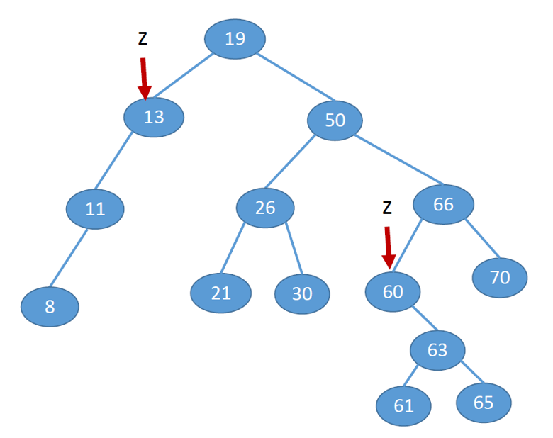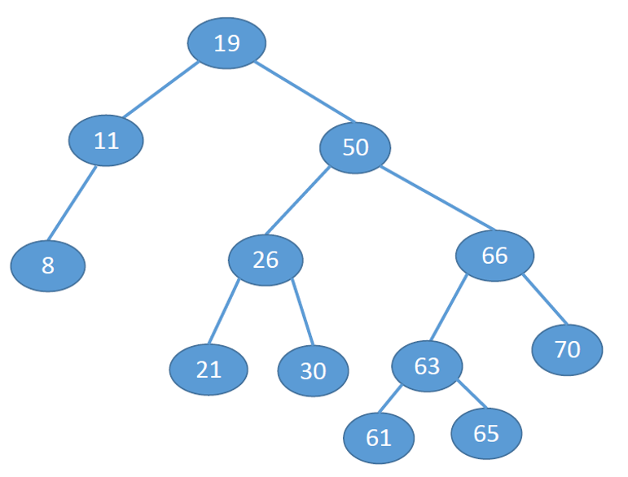
如果有两个孩子，那么让该节点的直接前驱/直接后继代替这个节点，然后删除直接前驱/直接后继。例如要删除50，就让50的直接后继60代替50，然后把60原来的右子树挂到66下。
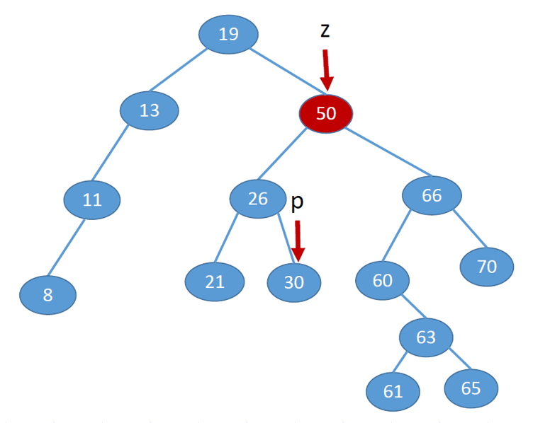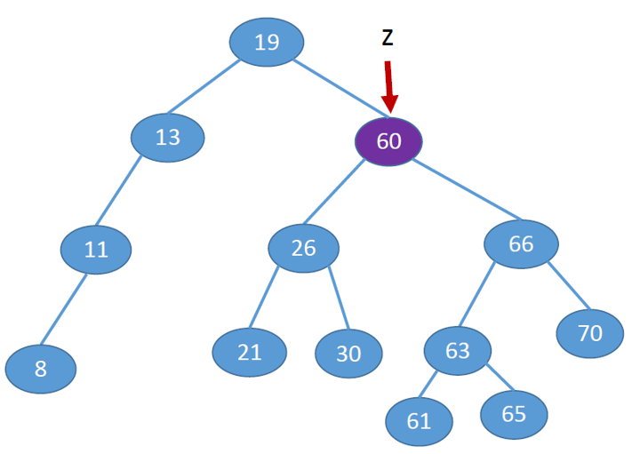
AVL树
BST树有一个重大的问题：不平衡。例如，根据数字序列1，2，3，4，5，6构建一颗BST树，那么2会挂到1右边，3会挂到2右边……依次下去，这棵树本质上是一个链表，查找的时间复杂度退化为 O(n)。究其根本，是因为这个树右边太重，左边太轻，不平衡。
于是AVL树应运而生。它在插入后会进行旋转操作，确保这棵树是平衡的。那么究竟什么是”平衡“？怎样量化一棵树的”平衡程度“？
平衡因子
平衡因子就是量化平衡程度的一个指标。它的定义如下： 节点的平衡因子 = 左子树高度 − 右子树高度
殷人昆的书上定义为右子树高度 − 左子树高度，但是无伤大雅。
一棵树中，如果每个节点的平衡因子的绝对值都小于等于1，那么就说这棵树是平衡的；否则，这棵树就是不平衡的。
查找
同BST树。
插入
首先按照BST的插入方式进行插入。但是这可能导致树不平衡。为此，要进行旋转操作。旋转的关键在于找到“爷爷-爸爸-孙子”对（我自创的名词，哈哈）。下面通过实例说明。
初始状态
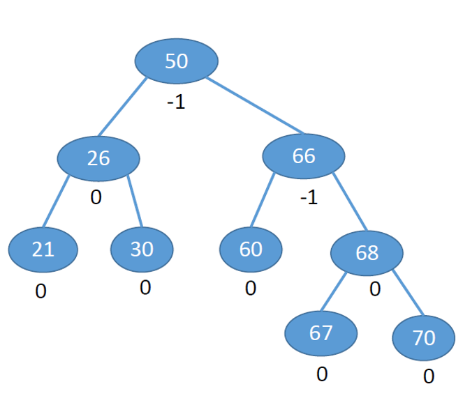
插入90，此时66不平衡。不平衡的原因（90）来源于66右孩子的右子树。“爷爷-爸爸-孙子”对是66-68-70。于是进行RR型旋转：把66围绕68左旋，然后调整各子树。LL型旋转同理，不再赘述。
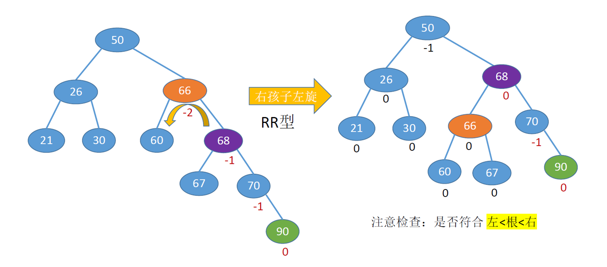
插入63，此时50不平衡。不平衡的原因（63）来源于50右孩子的左子树。“爷爷-爸爸-孙子”对是50-68-66。于是进行RL型旋转：先把68围绕66右旋，再把50围绕66左旋。最后调整各子树。
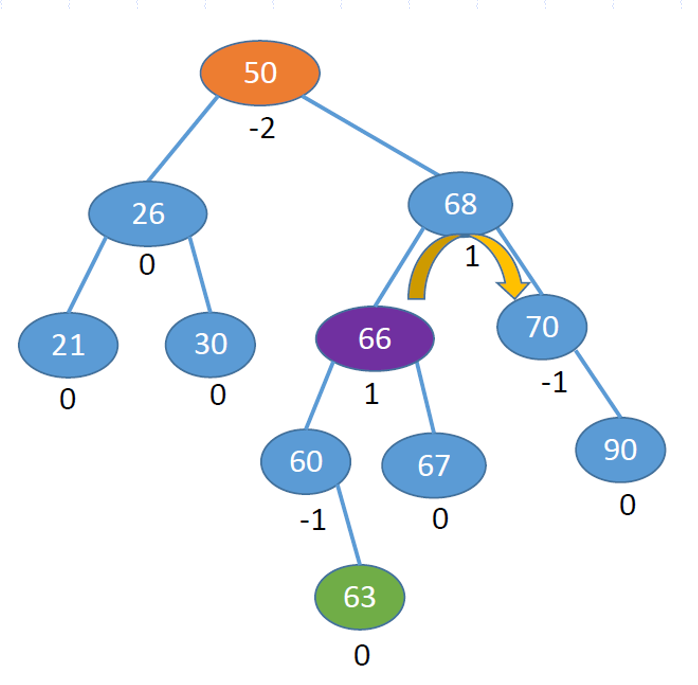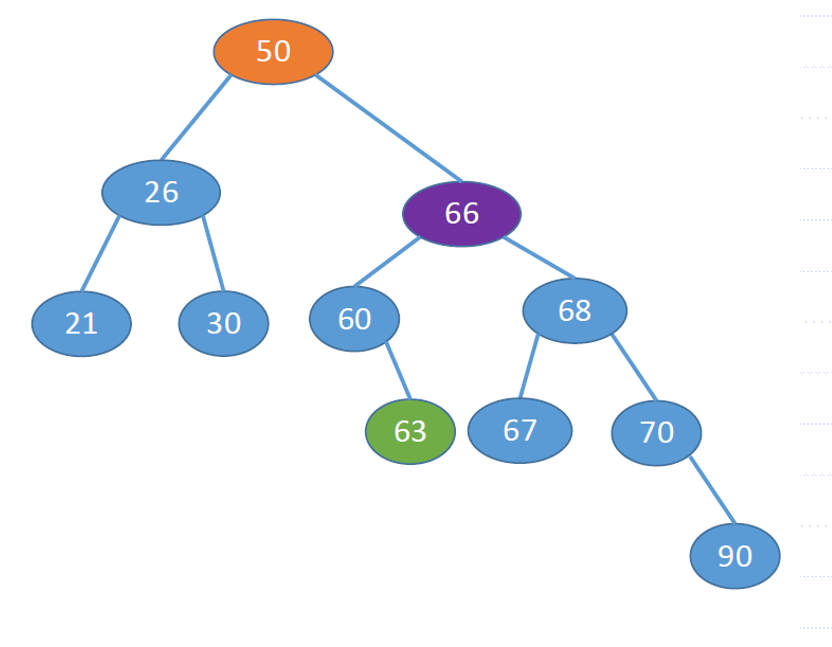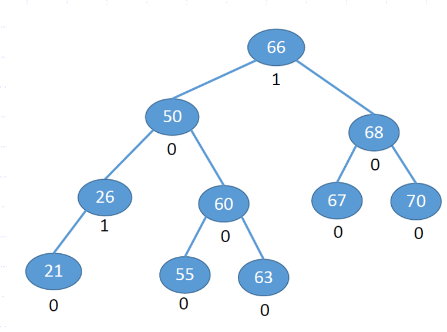
插入57，此时66不平衡。不平衡的原因（57）来源于66左孩子的右子树。“爷爷-爸爸-孙子”对是66-50-60。于是进行LR型旋转：选把50围绕60左旋，再把66围绕60右旋。最后调整各子树。（中间状态未给出，可恶的zdl）
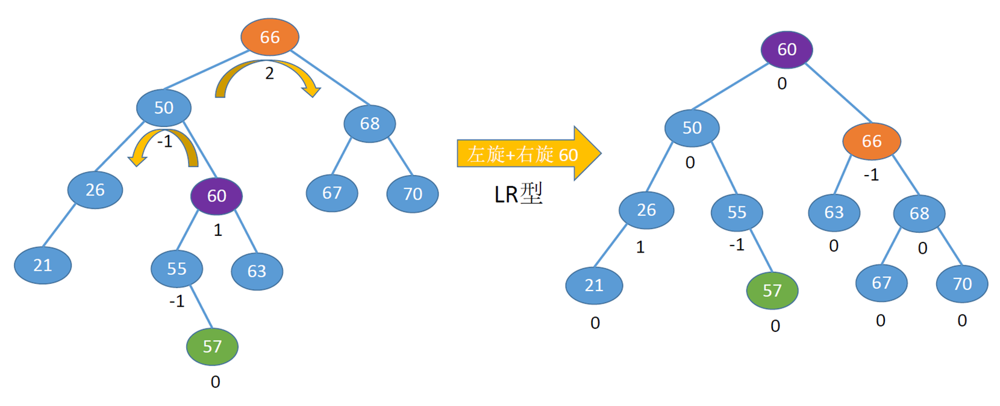
说了这么多可能有点晕。但实际做题的时候只需要：找到“爷爷-爸爸-孙子”对，然后根据三个节点的元素值进行重排，找到第二大的节点作为root，然后瞎几巴调整一通就可以了。人不像计算机，人是有上帝视角的。
以最后一个LR旋转为例。50<60<66，60是第二大的节点，因此作为根节点，左孩子是50，右孩子是66。然后把原来的子树瞎几把连到50和66上就可以了。
删除
按照BST树的删除方式进行删除即可（分为三种情况），最后检查一下是否平衡，如果不平衡就旋转。
伸展树
伸展树的基本思想和缓存类似，即“这次访问的东西在不久的未来很可能要再访问一次”。具体来说，
- 如果这次访问了x，那么访问完之后就要把x搞到根节点上去（多么激进啊）
- 如果这次插入了x，那么插入完之后就要把x搞到根节点上去（多么激进啊）
- 如果这次删除了x，那么删除完之后就要被x的爸爸搞到根节点上去（多么激进啊）
那么怎么搞到根节点上去呢？关键也是找到“爷爷-爸爸-孙子”对。但和AVL树不同，AVL在寻找“爷爷-爸爸-孙子”对的时候，是从爷爷开始往下找的。但伸展树是从孙子开始往上找的。
找到“爷爷-爸爸-孙子”对后，
zig-zig型：孙子当爷爷，爷爷当孙子，倒反天罡。然后瞎几把调整子树。
zig-zag型：以第二大的元素为根节点，左孩子连最小，右孩子连最大，然后瞎几把调整子树。
zig型：退化为“爸爸-儿子”对，儿子当爸爸，爸爸当儿子，倒反天罡。然后瞎几把调整子树。
这两种旋转的根本目的，是把孙子搞到上面去。下图中，一开始X在最底下，旋转完之后就跑到最上面去了。
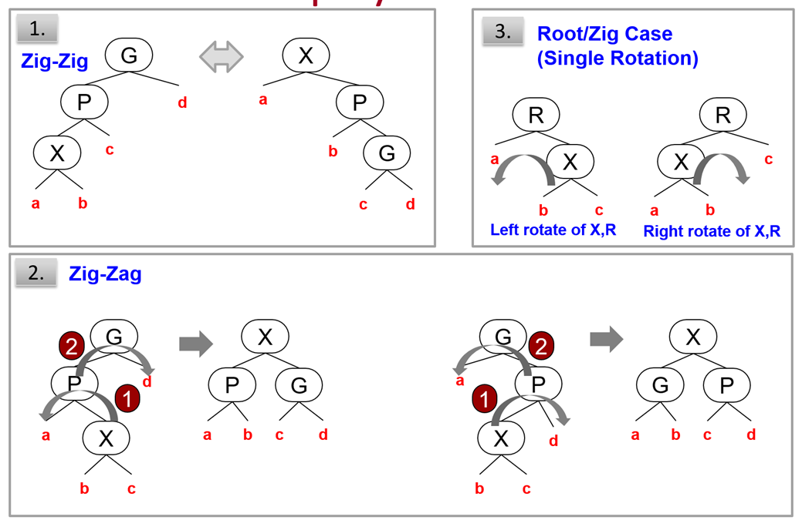
下面具体说明。
查找
同BST树。随后进行“把访问的节点搞到根节点”的操作。
- 查找1，想把1搞到根节点。
- 3-2-1是zig-zig型的“爷爷-爸爸-孙子”对，于是孙子当爷爷，爷爷当孙子，1上移两层。
- 但1还没有到根节点，于是继续。5-4-1是zig-zig型的“爷爷-爸爸-孙子”对，于是孙子当爷爷，爷爷当孙子，1上移两层。
- 但1还没有到根节点，于是继续。6-1是zig型的“爸爸-儿子”对，于是把6转下来，1成为root。
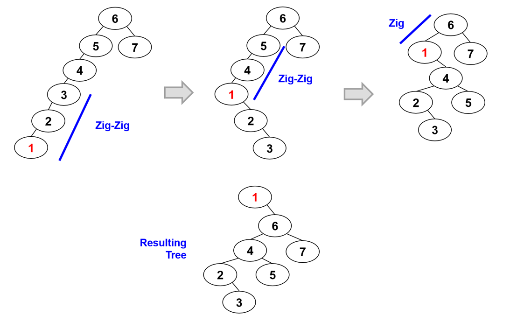
查找3，想把3搞到根节点。
3-2-4是zig-zag型的“爷爷-爸爸-孙子”对，3为中间元素，于是6左子树的新root为3，3上移两层。
但3还没有到根节点，于是继续。1-6-3是zig-zag型的“爷爷-爸爸-孙子”对，于是孙子当爷爷，爷爷当孙子，3上移两层。此时3成为root，结束。
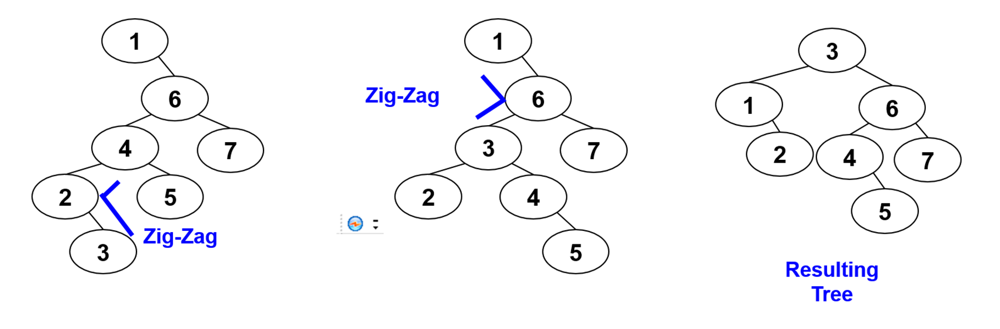
插入
同BST插入，然后按“查找”中的方法把插入的节点搞到根节点去。
- 插入11
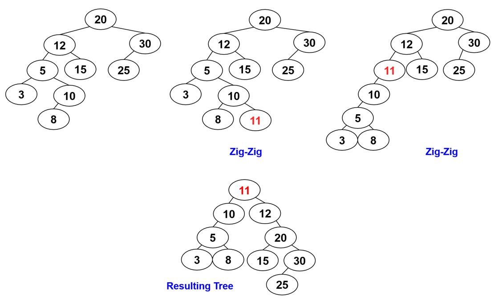
- 插入4
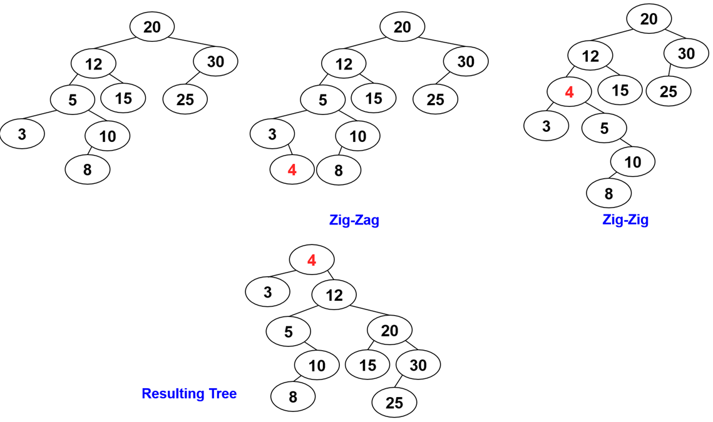
删除
先按照BST的删除，然后把被删节点的爸爸搞到根节点即可。
- 删除3
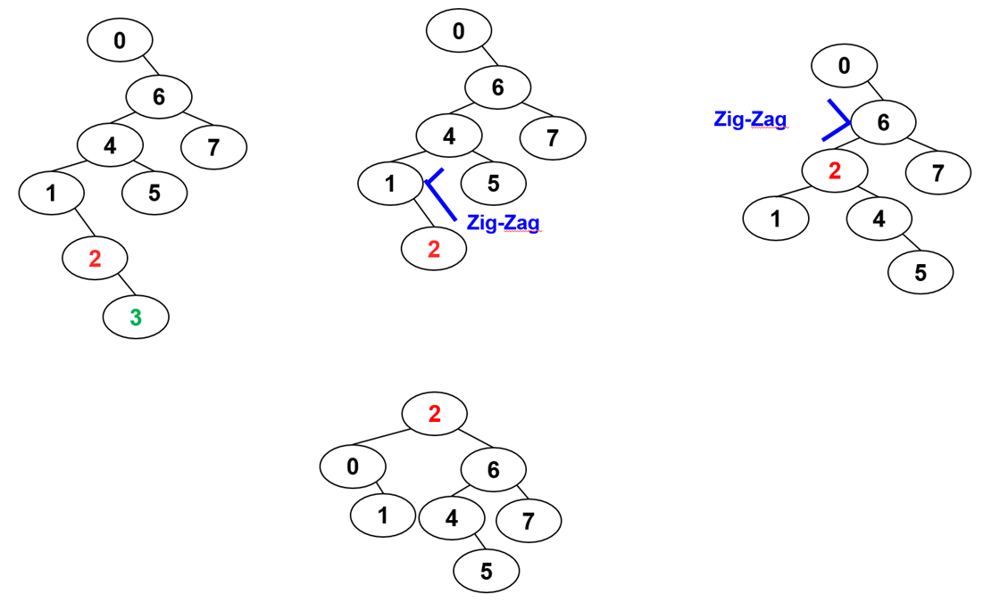
红黑树
红黑树具有以下性质：
- 根节点和所有外部节点都是黑色
- 根节点到所有外部节点的路径上没有两个连续红色
- 根节点到所有外部节点的路径上的黑色节点个数相同
把一些红色节点随机插到满二叉树里，可以得到一棵红黑树。
画红黑树的时候，一般要把叶子节点的nullptr给画出来。
插入
- 新插入的节点为红色
- 如果根节点为红色，则改成黑色
- 如果爸爸是黑色，则结束
- 如果爸爸是红色
- 如果叔叔是红色，则将爸爸、叔叔、爷爷颜色反转
- 如果叔叔是黑色，则旋转（LL，RR，LR，RL）后，最后一次旋转的旋转中心和旋转点颜色反转（本质上还是要找到“爷爷-爸爸-孙子”对）
下面举一个例子：依次插入10，20，30，15，25，12，5，3，8（图中省略了黑色的nullptr）
- 插入10，初始为红色。由于10是根节点，所以变成黑色。（图中省略了红变黑的过程）
- 插入20，标为红色，不违反规则。
- 插入30，出现两个连续红色20，30。30的叔叔是黑色（nullptr），所以需要旋转。把10绕着20左旋，并把10，20颜色反转。
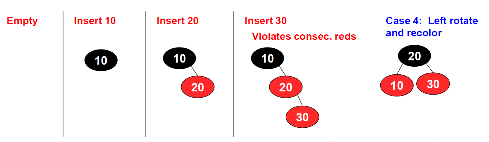
- 插入15，出现两个连续红色10，15。15的叔叔30是红色，因此把10，30，20颜色翻转。但翻转后根节点20为红色，违反规则，于是再把20变成黑色。
- 插入25，没毛病。
- 插入12，出现两个连续红色12，15。12的叔叔是黑色，需要旋转。“爷爷-爸爸-孙子”对是10-15-12。最后一次旋转是10绕着12左旋，于是把10和12颜色反转。
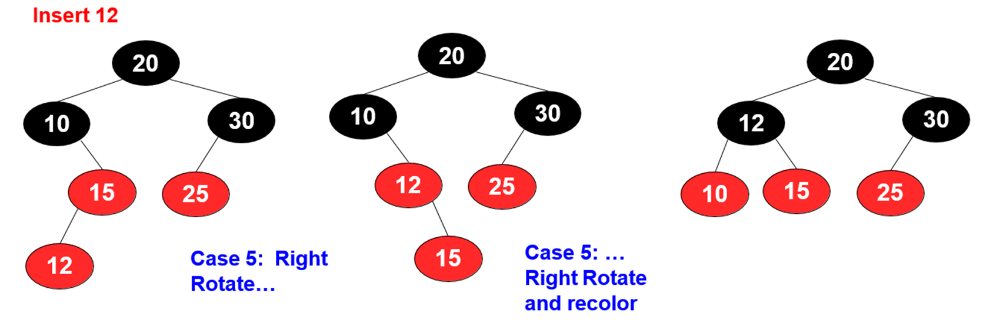
- 插入5，出现两个连续红色10，5。5的叔叔15是红色，于是把12，10，15颜色翻转。
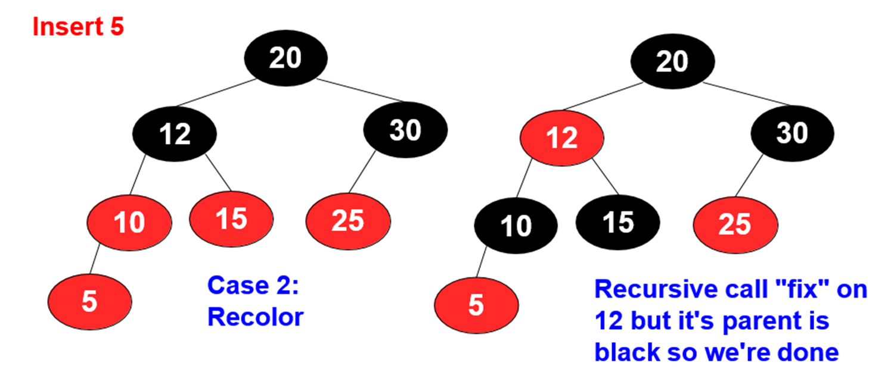
- 插入3，出现两个连续红色5，3。3的叔叔是黑色，因此需要旋转。“爷爷-爸爸-孙子”对是10-5-3。最后一次旋转是10绕着5右旋，因此5，10颜色反转。
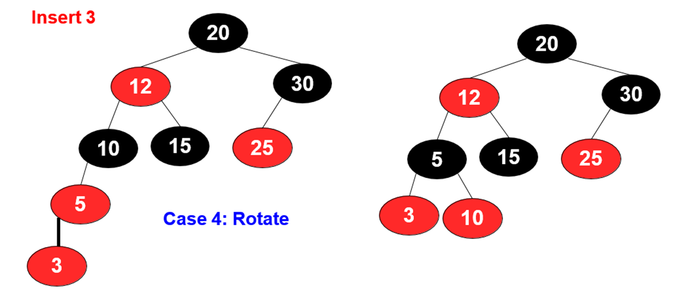
- 插入8，出现两个连续红色10，8。8的叔叔3是红色，因此将3，10，5颜色翻转。但此时5，12是连续红色，把5视作插入的节点。5的叔叔30是黑色，需要旋转。“爷爷-爸爸-孙子”对是20-12-5。最后一次旋转是20绕着12右旋，因此12，20颜色反转。
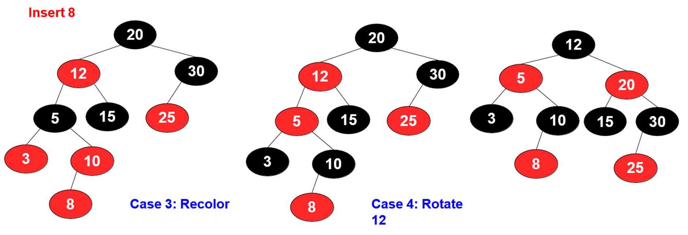
删除
删除操作比较复杂，这里不做讨论。
B树
B树是一种多叉排序树。为了保证查找效率，m 叉排序树需保证：除了根节点之外，任何节点至少要有 $\lceil \frac{m}{2} \rceil$ 个分叉，即至少有 $\lceil \frac{m}{2} \rceil-1$ 个关键字。例如，5叉排序树除了根节点外，每个节点至少有3个分叉，2个关键字。
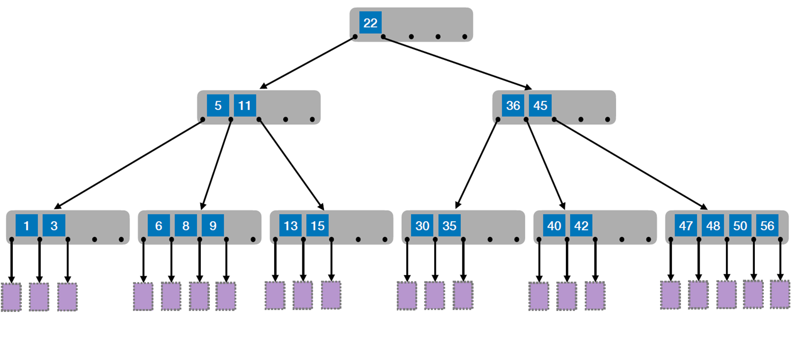
插入
先按照BST的思路正常插入。如果插入时上溢出，那么需要进行裂变。
下面举例说明插入操作。
插入25，38，49，60：

插入80，此时超出了一个节点的最大容量。取中间位置（$\lceil \frac{m}{2} \rceil$）处的关键字，将节点裂变为两部分。
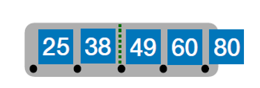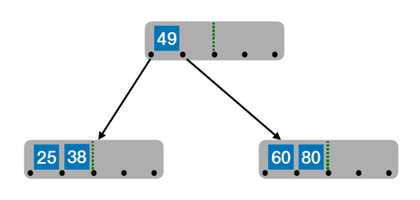
插入90，99：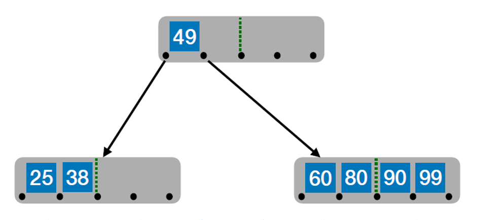
插入88，节点溢出，取出中间元素88进行裂变。
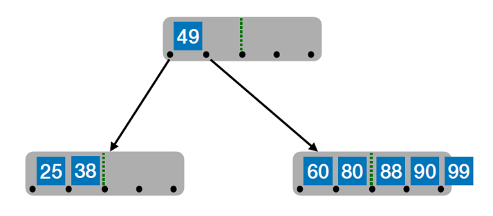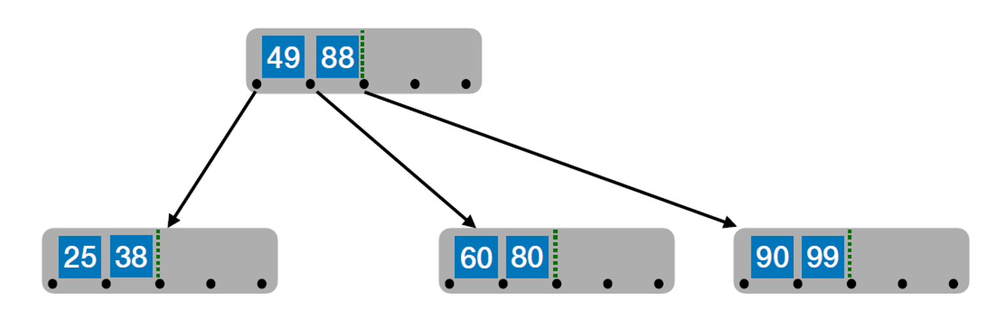
插入83，87：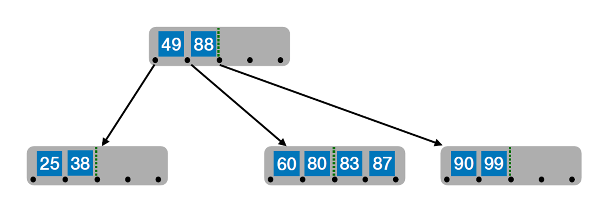
插入80：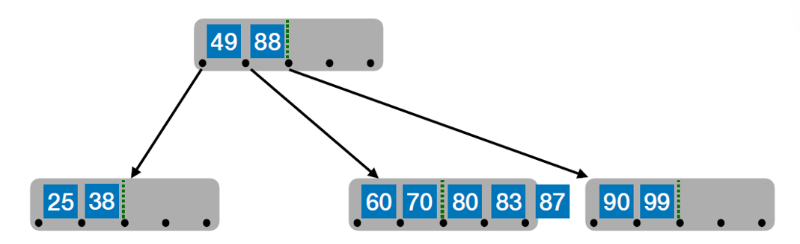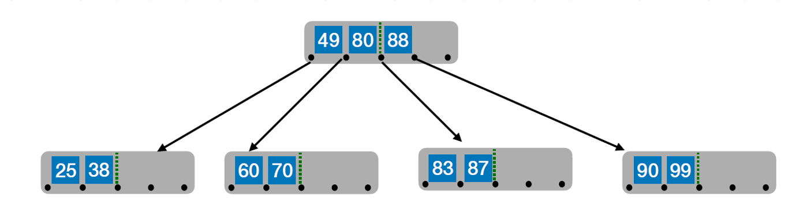
插入93，94，99：
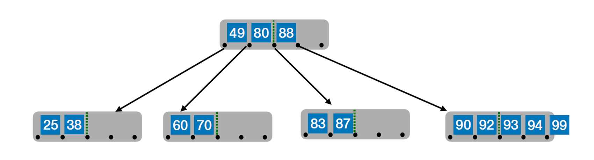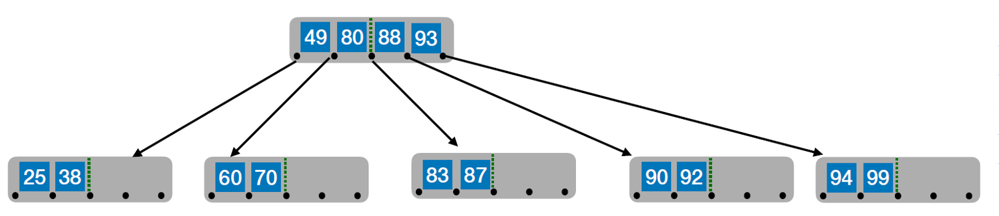
插入73，74，75，根节点也需要裂变
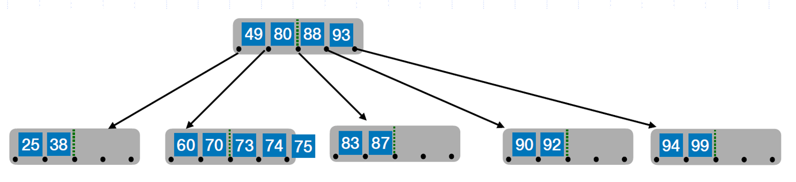
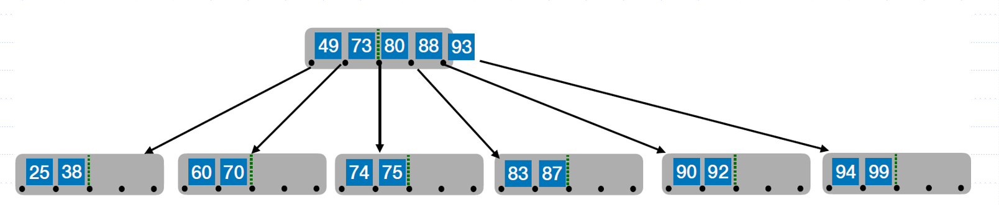
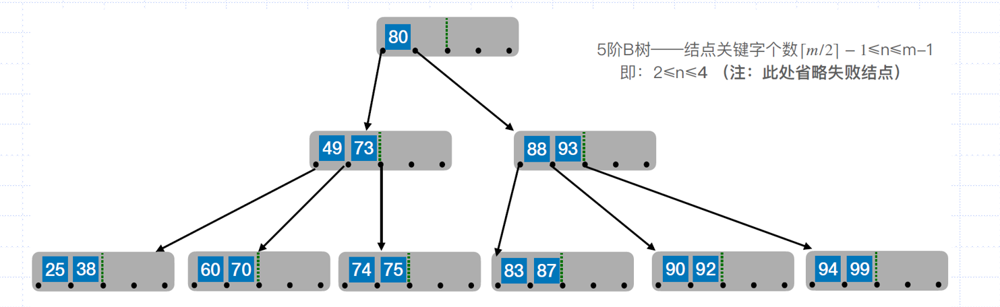
删除
- 若被删数字在叶子节点，则直接删除
- 若被删数字在内部节点，则用它的前驱/后继代替
- 最后检查是否下溢出（节点元素个数小于$\lceil \frac{m}{2} \rceil-1$）
- 兄弟够借，则问兄弟借一个，然后调整
- 兄弟不够借，则与兄弟合并，然后调整
下面举例说明。
- 初始状态
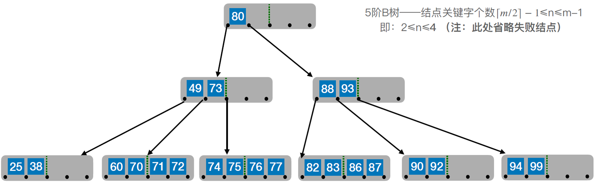
- 删除60，60在叶节点，直接删除
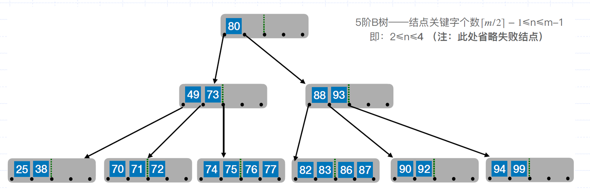
- 删除80，80不在叶节点，于是选择80的前驱77/后继82代替80，这里选择77
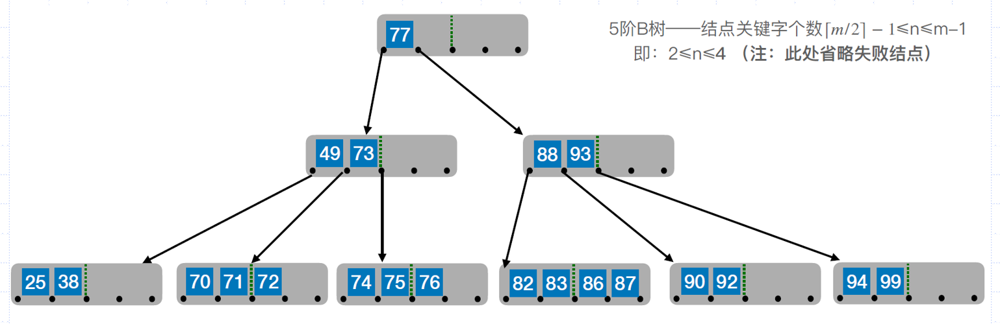
- 删除77，77不在叶节点，于是选择77的前驱76/后继82代替77，这里选择82
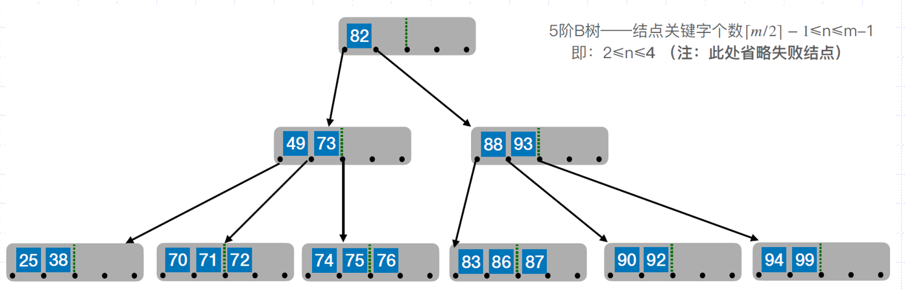
- 删除38，直接删除后左下角节点下溢出。兄弟节点70，71，72够借。但不能直接借，否则不符合查找树定义。于是49下去，70上来。
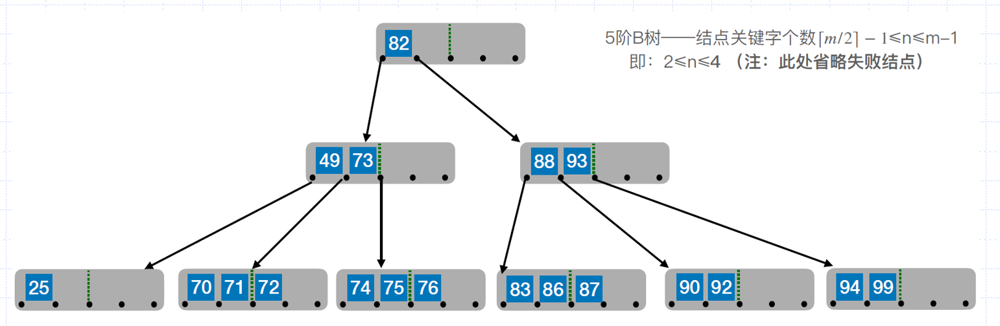
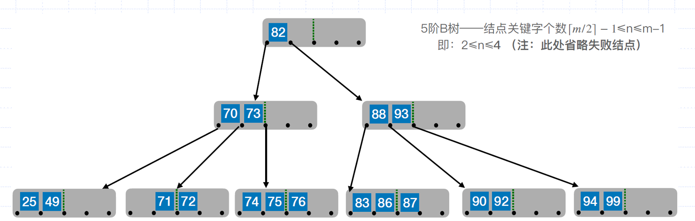
- 删除90，发生下溢出。右兄弟不够借，但左兄弟够借，于是问左兄弟借。88下去，87上来。
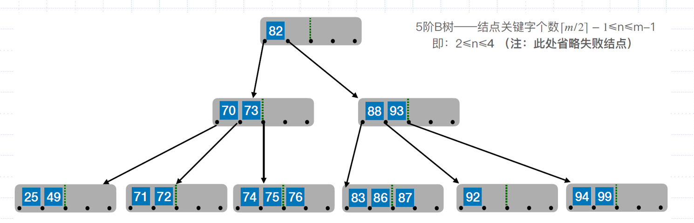
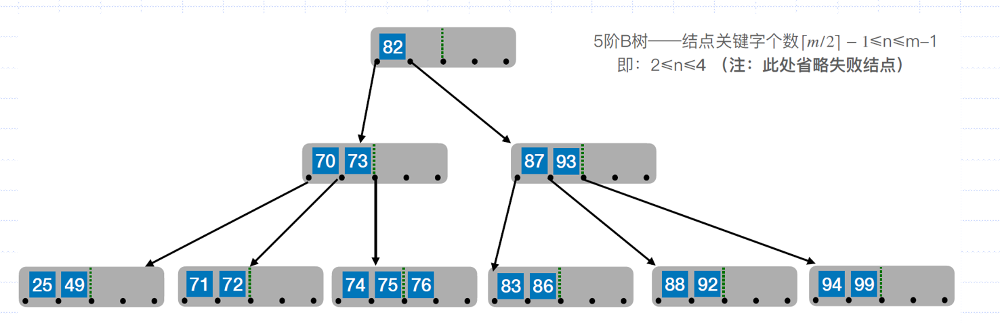
- 删除49，但是兄弟不够借。于是与兄弟合并，同时70下来。
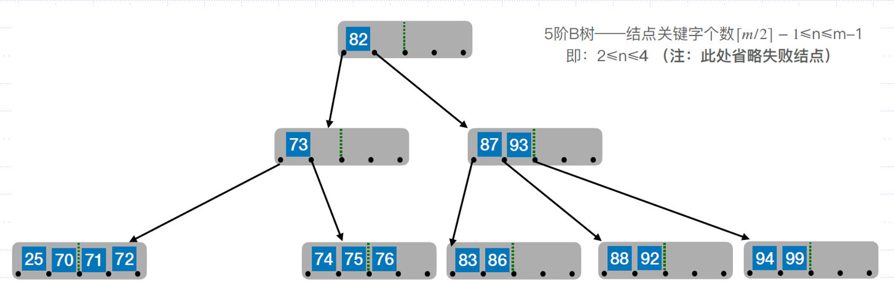
- 但此时73所在节点下溢出，右兄弟不够借，于是与右兄弟合并，同时82下来，根节点消失。
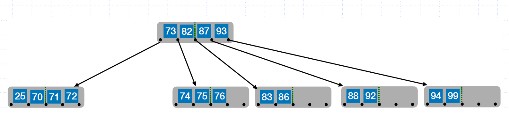
B+树
与B树最大的不同是，B树的指针是插在数字的缝隙里的，而B+树的指针是连在数字上的。
此外，每个格存储的是它的孩子的最大值。
同时，叶子节点串成一个链表，可以看作数据库的“索引”；而非叶子节点可以看作“索引的索引”。
查找
注意与BST的不同即可。
插入与删除过于复杂，不作要求。
总结
纵观这六种树形结构，我们可以清晰地看到数据结构演进的内在逻辑：一切都是为了在不同场景下实现更高效的查找。
- BST 是万物之源，提供了最基本的二分查找思想，但由于缺乏约束，在极端情况下难以对抗退化。
- AVL树、伸展树、红黑树
是在内存中对二叉树的改良。它们的核心手段都是旋转。
- AVL追求极致的平衡（严格的高度限制）；
- 伸展树追求访问的局部性（类似缓存，把热点数据搞上去）；
- 红黑树追求统计意义上的平衡（通过颜色约束），是前两者在性能与维护成本上的折中方案。
- 做题心法：无论旋转规则多复杂，核心永远是精准定位“爷爷-爸爸-孙子”对，然后发挥人类的“上帝视角”直接重构局部连接。
- B树、B+树 则是为了应对海量数据和磁盘I/O而生的多叉树。它们不再局限于二叉，而是通过节点裂变（上溢）与合并（下溢）来维持树的“矮胖”形态，从而最大限度减少访问层级。
掌握这些树，本质上就是掌握“如何通过动态调整结构，让数据在逻辑上始终保持有序和平衡”的艺术。希望本文档能帮你从数学和图形的角度，看清这些指针乱飞背后的规律。